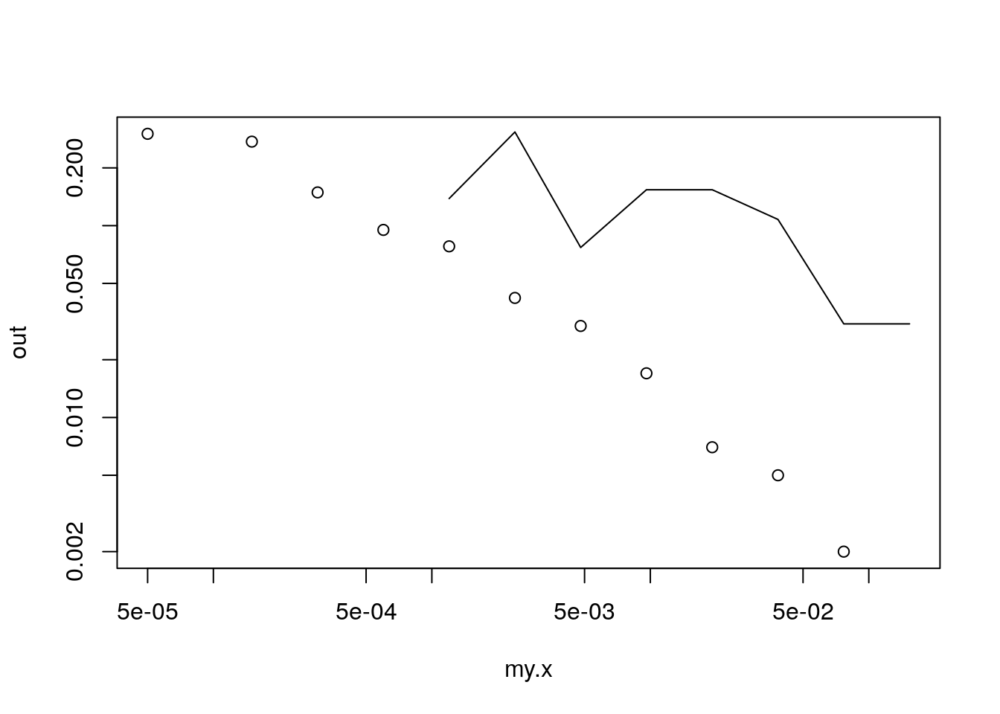
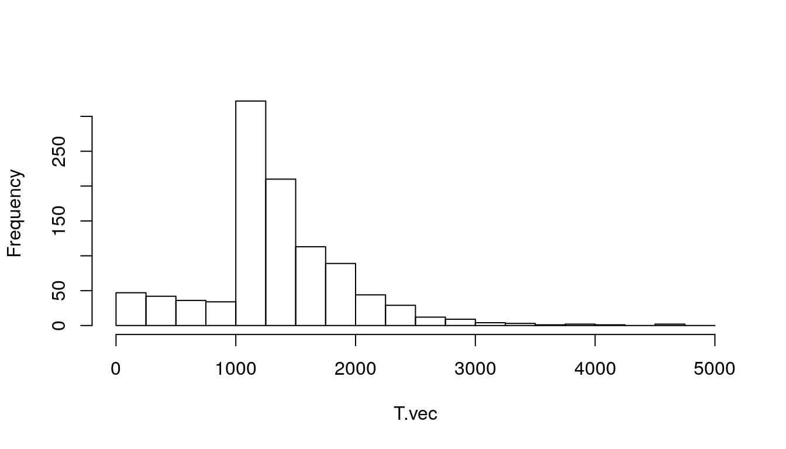
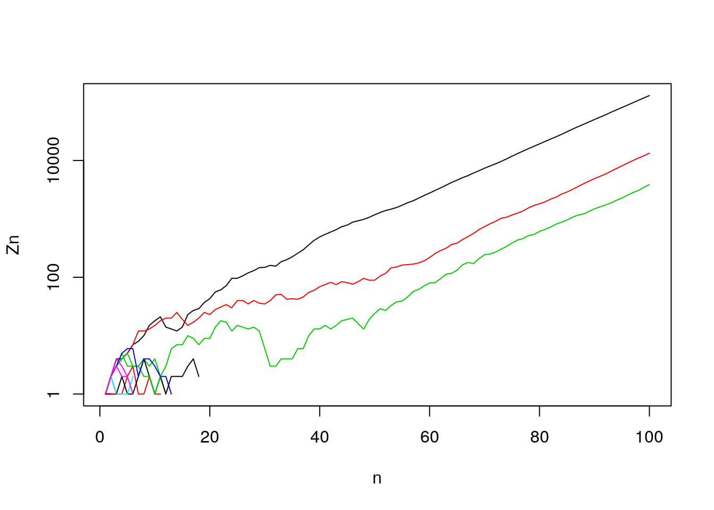

Chapter 9 Fisher-Wright
9.1 Outline
- Fisher Wright vs Galton Branching Process
- FW with mutation
- Extinction
- Application: Baby Names
Additional resources:
- Blog “Introduction to the Wright-Fisher Model” https://stephens999.github.io/fiveMinuteStats/wright_fisher_model.html#pre-requisites
- Hahn and Bentley (2003): Evolutionary anthropologists arguing that the neutral explanation of the Fisher-Wright model is consistent with the distribution of 1st names. What other quantitative or qualitative features of 1st name fashion could be used to try to reject the neutral model?
- Felsenstein (2005): Very complete “lecture notes” for graduate genetics course. Lots of good commentary, does not assume a lot of math background, but lots of content and can be diffcult to read a piece by itself.
9.2 Parallel
Fisher-Wright
- Children picking their parents (not “generative”)
- Total population size is constant
- Qualitatively similar to BP. Extinction and fixation.
- Flexible: mutation, selection, even changes in pop size.
- With apologies, biologists take FW “seriously” even if they don’t take it “literally”.
Galton-Watson-Bienaym'e Branching Processe
- Branching process models independent parents randomly producing offspring. “Generative”
- Total population size can vary, and has a random component and deterministic one \(m\)
- Qualitative result when \(m = 1\) is that there is one longest surviving line. This is “fixation”, when one type becomes universal.
9.2.1 Another cell phone example
Let’s simulate and draw lines
Gen 1 0 1 2 3 4 5 6 7 8 9
Gen 2
Gen 3
- What will happen?
9.3 Mutation
Simulation
fwm <- function(N, n_gen, mu = 0) ## mu != 4/N
{
## simulate fisher-wright (with mutations)
x <- paste(1:N) ## starting types
A <- matrix(NA, nrow = n_gen, ncol = N)
for (i in 1:n_gen)
{
A[i,] <- x
x <- sample(x, size = N, replace = T)
x <- mut(x, mu)
x
}
return(A) ## matrix of types, each line a generation.
} mut <- function(x, mu)
{
## m, the individuals that mutate
m <- which(rbinom(length(x), 1, mu) == 1)
if (length(m) == 0) ## if no-one mutates
return(x)
## add a suffix to their ID, so it will be unique (infinite alleles)
suffix <- 10000*round(runif(length(m)),4)
x[m] <- paste0(x[m], ".", suffix)
x
}Trying it out
## [,1] [,2] [,3] [,4] [,5] [,6] [,7] [,8] [,9] [,10]
## [1,] "1" "2" "3" "4" "5" "6" "7" "8" "9" "10"
## [2,] "9" "4" "7" "1" "2" "7" "2" "3" "1" "5"## [,1] [,2] [,3] [,4] [,5] [,6] [,7] [,8] [,9] [,10]
## [1,] "1" "2" "3" "4" "5" "6" "7" "8" "9" "10"
## [2,] "5" "5" "2" "10" "9" "1" "4" "3" "6" "10"Trying it out some more
set.seed(1)
A <- fwm(N = 10, n_gen = 20, mu = 0)
tt <- table(A, row(A)) ## count types by row
ptt <- prop.table(tt, 2) ## proportions
matplot(t(ptt), type = 'l', lty = 1, main = "FW simu")
text(x = 4, y = jitter(ptt[,4]), rownames(ptt), col = 1:6)
Questions:
- What happens at time 15?
- Why does line 5 rise and fall?
- What happens at time 2?
- What is \(E(p_i(t) | p_i(t-1))\)?
Bigger pop and more time
set.seed(1)
A <- fwm(N = 100, n_gen = 200, mu = 0)
tt <- table(A, row(A)) ## count types by row
ptt <- prop.table(tt, 2) ## proportions
matplot(t(ptt), type = 'l', lty = 1)
- What does this remind you of? What will happen in long run?
- What other questions could we ask?
9.4 Fixation
Questions we can ask
- What is probability that line \(i\) will ``fix’’? (Hint: easy)
- What is expected time until some line fixes? (We’ll demo the result)
- How can we describe the path to fixation? (We’ll derive the result)
Probability that a particular line will “fix”
set.seed(1)
A <- fwm(N = 10, n_gen = 20, mu = 0)
tt <- table(A, row(A)) ## count types by row
ptt <- prop.table(tt, 2) ## proportions
matplot(t(ptt), type = 'l', lty = 1, main = "FW simu")
text(x = 4, y = jitter(ptt[,4]), rownames(ptt), col = 1:6)
Expected time until fixation?
Answer for us is \[ \bar{T}_{fixed} = 2 \cdot N \] Note: Biologists say \(4 N_e\). See Wikipedia “Genetic drift”
Simulation of time to fixation
T.vec <- NULL
all.the.same <- function(x){length(unique(x)) == 1}
set.seed(10)
for (i in 1:100)
{
A <- fwm(N = 100, n_gen = 1000,mu = 0)
extinction_time = min(row(A)[apply(A, 1, all.the.same)])
T.vec[i] <- extinction_time
}
mean(T.vec)## [1] 202.899.4.1 Path to fixation: a measure of homogeneity/heterogeneity
Chance that two randomly drawn individuals are of same type. \[ G = \sum_i p_i^2 \]
If we have two types, \(p_1 = \pi\) , \(p_2 = 1-\pi\)? What is G if \(\pi = 0, .5, 1\)?
Let’s derive time path of G
Let’s assume just two types, \(\pi(t)\)
Chance two indiv are of same type \[ G_{t+1} = P(\mbox{same parent})\cdot 1 + P(\mbox{different parent})\cdot G_{t} \]
Notation: I’m going use \(K\) for pop size. Bio uses \(2N\). \[ G_{t+1} = {1 \over K} \cdot 1 + (1 - {1\over K}) \cdot G_{t} \]
Easier to solve letting \(H = 1 - G\). Some algebra gives \[ H_{t+1} = H_{t} (1 - 1/K) \]
Or, \[ H_{t} = H_0 (1 - 1/K)^t % \rightarrow H_0 e^{-t/K} \] So, H goes to 0 exponentially, just as G goes to 1.
9.5 Baby Names
“Drift as a mechanism for cultural change: an example from baby names” by Matthew W. Hahn and R. Alexander Bentley Proc. R. Soc. Lond. B 2003 270, S120-S123
9.5.1 What’s the basic idea?
- How is naming a baby like Fisher-Wright?
- How is it not?
Applying
- Like Fisher-Wright
- people choose from existing set (?)
- names are “neutral” (?)
- draw proportionally (?)
- They test to see if they can reject FW
- compare observed histograms to FW simulation
- They include mutation to get a stationary disn Note: failing to reject FW doesn’t mean it’s correct
Their picture

Baby Names by Matthew W. Hahn and R. Alexander Bentley Proc. R.Soc. Lond. B 2003 270, S120-S123
9.5.2 Fisher-Wright simulation of Baby Names (Hahn and Bentley)
Drwaing their Picture
Data prep
download.file(url= "https://www.ssa.gov/oact/babynames/names.zip",
"./names.zip")
unzip("names.zip", exdir = "./names")
library(data.table)
filenames <- system("ls ./names/*.txt", intern = T)
mylist <- vector("list", length(filenames))
names(mylist) <- gsub(pattern = "[^0-9]", replace = "", filenames)
for (i in 1:length(filenames))
{
myfile <- filenames[i]
mylist[[i]] <- fread(myfile)
}
dt <- rbindlist(mylist, idcol = "year")
names(dt) <- c("year", "name", "sex", "N")ok, we have the data now
Plot observed frequencies
## male 1900-1909
my.dt <- dt[sex == "M" & year %in% 1900:1909]
foo <- my.dt[, .(N = sum(N)), by = name]
foo <- foo[order(N, decreasing = T)]
bar <- foo[1:1000,] ## 1000 top namesnow let’s do a power law plot
my.breaks <- c(0, 2^(0:11)/10000)
bar[, p := round(prop.table(N),5)]
bar[, pcat := cut(p, breaks = my.breaks, right = F, include.lowest = T)]
out <- unclass(prop.table(table(bar$pcat)))
my.x <- my.breaks[-length(my.breaks)] + diff(my.breaks)/2
plot(my.x, out, log = "xy")## Warning in xy.coords(x, y, xlabel, ylabel, log): 1 y value <= 0 omitted from logarithmic plot
9.5.3 Drawing their picture with simulation
FW simulation
mut <- function(x, mu)
{
## m, the individuals that mutate
m <- which(rbinom(length(x), 1, mu) == 1)
if (length(m) == 0)
return(x)
suffix <- 10000*round(runif(length(m)),4)
x[m] <- paste0(x[m], ".", suffix)
x
}
fwm <- function(N, n_gen, mu = 0)
{
x <- paste(1:N)
A <- matrix(NA, nrow = n_gen, ncol = N)
for (i in 1:n_gen)
{
A[i,] <- x
x <- sample(x, size = N, replace = T)
x <- mut(x, mu)
x
}
return(A)
}Let’s look at evolution over time of G: chance that two individuals are of same type
without mutation

with mutation, 1 trial
 average over 100 trials
average over 100 trials
n_gen = 2000
n_trials = 100
G.mat <- matrix(NA, n_trials, n_gen)
for (i in 1:n_trials)
{
N = 1000
A <- fwm(N, n_gen, mu = 4/N)
G.vec <- apply(A, 1, get.G)
G.mat[i,] <- G.vec
}
matplot(t(G.mat), type = "l")
G.bar <- apply(G.mat, 2, mean)
lines(G.bar, lwd = 4)
abline(h = 1/9, lty = 3, col = "yellow", lwd = 5) cool plot, why is it about .11?
cool plot, why is it about .11?
## [1] 0.1111111Gillespie tells us that Gbar is supposed to be 1 / (1 + 4Nemu)
How does 4Nemu = 8?
Well, we have \(K*mu = 4\) and since \(K = 2*Ne\), \(Ne = = K/2\) (maybe)
9.5.4 FW babyname simulation of equilibrium frequencies
9.6 Now we can simulate babyynmes
n_gen = 1001
N = 1000
## set.seed(1)
## A <- fwm2(N, n_gen, mu = 4/N)
#A <- fwm2(N, n_gen, mu = 8/N)
###############
#What about the fwm2 function?
#######################
A <- fwm(N, n_gen, mu = 8/N)
## ok, lets do power law plot of this
x <- A[1001,]
tt <- table(x)
ptt <- prop.table(tt)
my.breaks <- c(0, 2^(0:11)/10000)
p <- ptt
## bar[, p := round(prop.table(N),5)]
##bar[, pcat := cut(p, breaks = my.breaks, right = F, include.lowest = T)]
pcat = cut(p, breaks = my.breaks, right = F, include.lowest = T)
out <- unclass(prop.table(table(bar$pcat)))
out.hat <- unclass(prop.table(table(pcat)))
my.x <- my.breaks[-length(my.breaks)] + diff(my.breaks)/2
plot(my.x, out, log = "xy")## Warning in xy.coords(x, y, xlabel, ylabel, log): 1 y value <= 0 omitted from logarithmic plot
9.7 Conclusions
- Fisher-Wright an alternative to branching processes
- It reverses logic of reproduction, but gives similar quantitative and qualitative results
- A neutral model for other processes?
- Starting point for coalescent
9.7.1 Some potential criticism
While we can’t reject that there’s some parameterization of FW that gives us similar disn, this doesn’t mean that we’ve found the right mechanism. (Just that we can’t reject it).
What are some other tests of this mechanism?
- Markov assumption. We could see if each frequency really followed random walk.
Perhaps we could see if variances were scaled to frequencies correctly.
References
Felsenstein, Joseph. 2005. “Theoretical Evolutionary Genetics Joseph Felsenstein.” University of Washington, Seattle. https://evolution.gs.washington.edu/gs562/2017/pgbook.pdf.
Hahn, Matthew W, and R Alexander Bentley. 2003. “Drift as a Mechanism for Cultural Change: An Example from Baby Names.” Proceedings of the Royal Society of London. Series B: Biological Sciences 270 (suppl_1). The Royal Society: S120–S123.